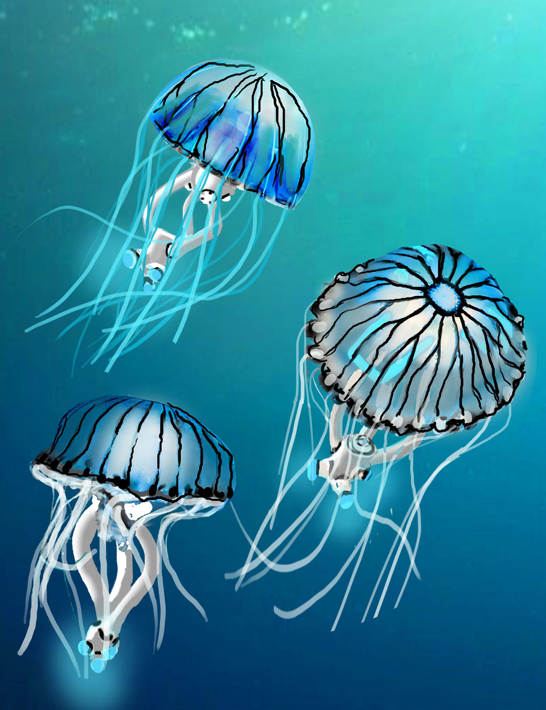
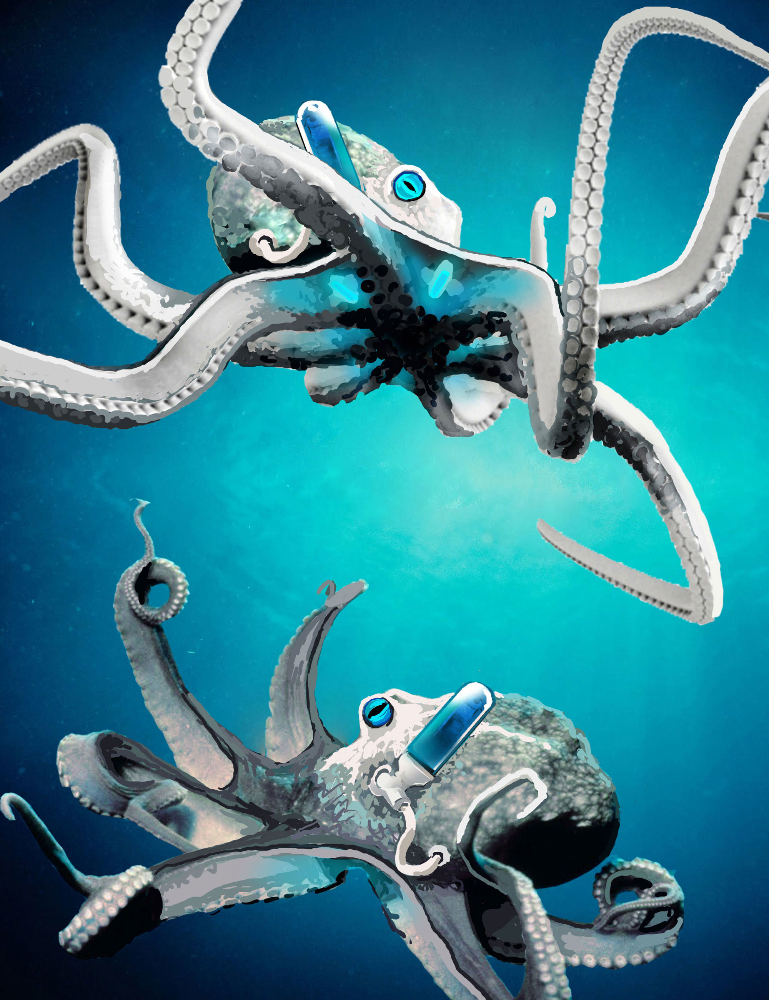
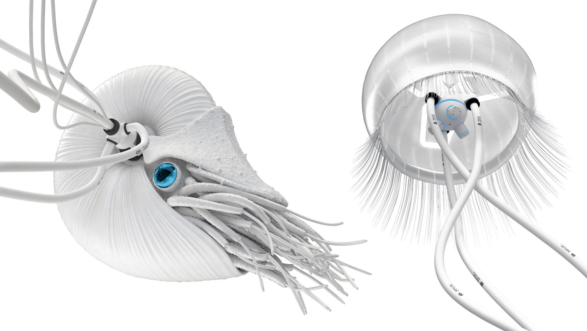
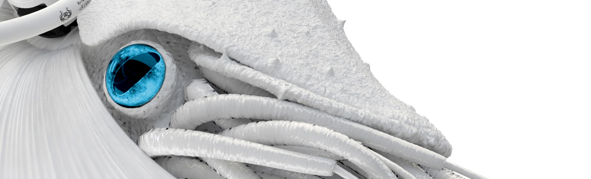
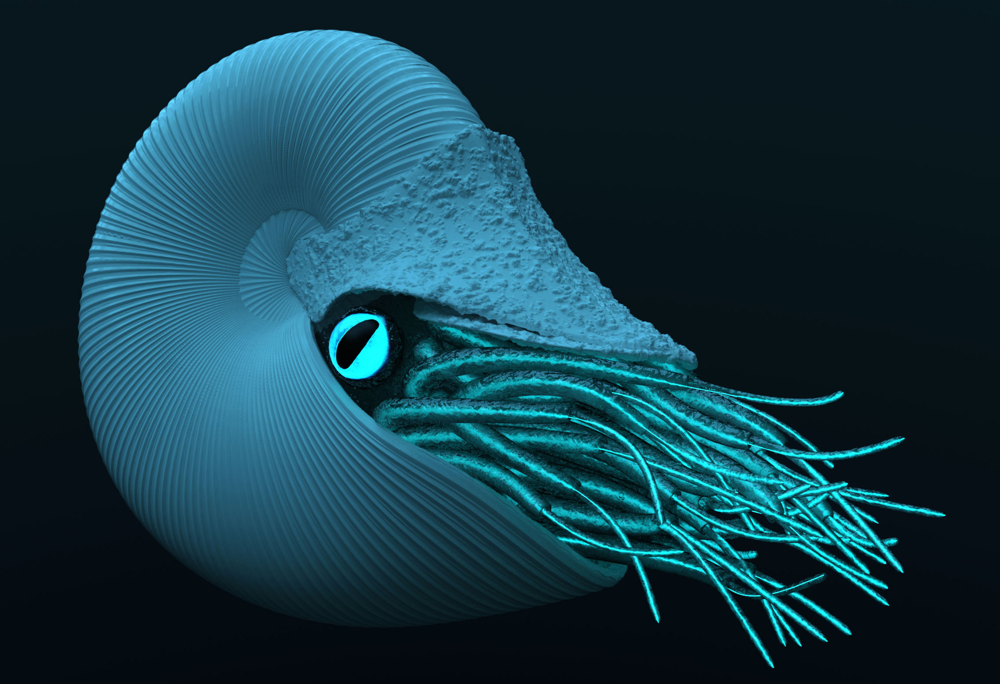
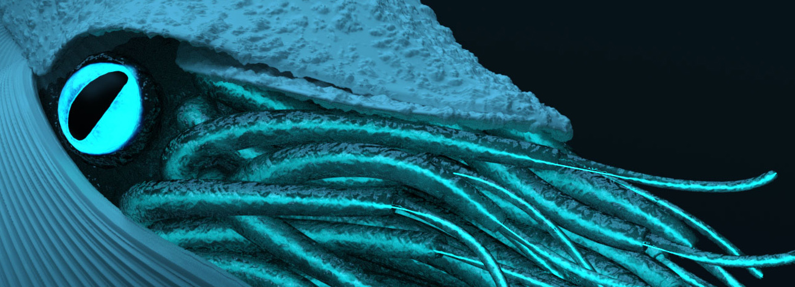
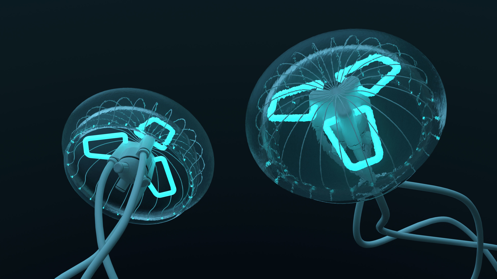
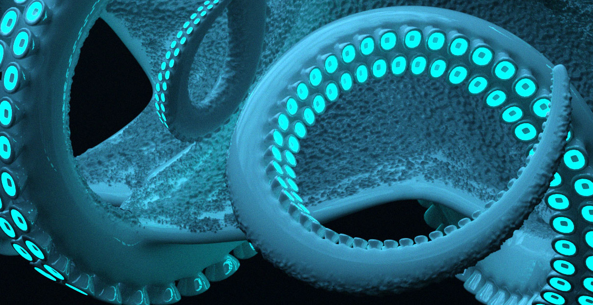
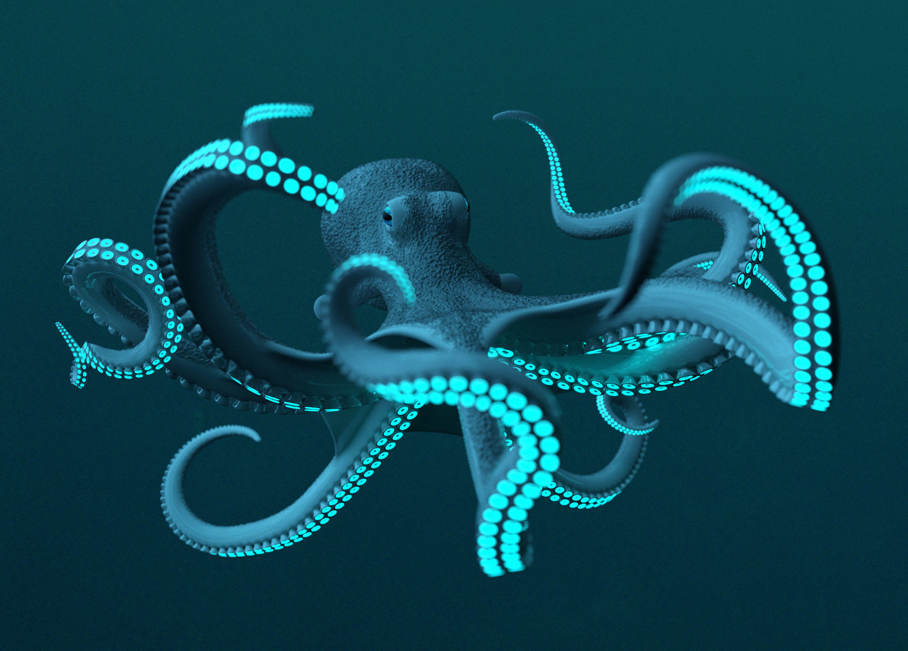

Tiefseetaucher









Different deep sea creatures for the digital agency Generation Digitale done at plx. The images are created to be used as content for their website. The task was to come up with any kind of high-tech inspired deep sea creatures in their corporate colors. My role included design, modeling in 3ds Max and rendering with vray/iray. We wanted them to look somehow organic but also artificial.
Verschiedene Tiefseekreaturen für die Hamburger Agentur Generation Digitale. Die Bilder sind für die Agenturwebseite entstanden. Das Ziel bestand darin High-Tech inspirierte Tiefseekreaturen in den CI-Farben der Agentur zu gestalten. Zu meinen Aufgaben gehörten Design, Modeling in 3ds Max und Rendering in vray/iray. Wir wollten einen organischen aber dennoch künstlichen Look erreichen.